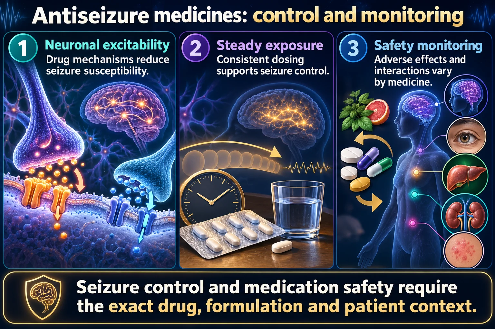

Two mood-stabilizer / anticonvulsant drugs — two very different organ toxicities to watch for
Both treat bipolar disorder & seizures, and both have a narrow therapeutic range requiring blood level monitoring — but their danger organs are opposite. Carbamazepine attacks the bone marrow & skin; valproic acid attacks the liver, pancreas, and platelets — and is one of the most teratogenic drugs in psychiatry. This is a separate comparison from the antidepressant classes (SSRI/SNRI/TCA/MAOI) — these two are mood stabilizers and anticonvulsants.
📄 Simple Nursing original — opens in Drive →
Sodium-channel blocker with two signature dangers: it can wipe out blood cell lines, and it can trigger a life-threatening skin reaction.
MOA Blocks voltage-gated sodium channels, stabilizing overexcited neurons — this is what makes it useful for both seizures and nerve pain.
Leukopenia (low WBC) → increased risk for a big infection. In severe cases, carbamazepine can cause aplastic anemia or agranulocytosis — the bone marrow stops making enough blood cells across one or more cell lines.

Seizure control and medication safety require the exact drug, formulation and patient context.
Neuronal excitability
Drug mechanisms reduce seizure susceptibility.
Steady exposure
Consistent dosing supports seizure control.
Safety monitoring
Adverse effects and interactions vary by medicine.
Carbamazepine
Monitor serious rash, blood-count effects, sodium and interactions as indicated.
Valproate
Monitor liver, platelet and pregnancy-related risks; it has major fetal risks.
Teaching
Do not stop abruptly; follow the individualized monitoring and pregnancy-prevention counseling plan.
Carbamazepine carries a known risk of triggering SJS — a severe, potentially life-threatening skin/mucous membrane reaction. Teach patients to report any new rash, blistering, or skin peeling immediately.
Carbamazepine induces liver enzymes that break down hormonal contraceptives, making oral contraceptives less effective. Patients need alternative birth control methods to prevent an accidental pregnancy.
Remember it by the letter L — liver toxicity, low platelets, and one of the most teratogenic drugs a nursing student will learn.
MOA Increases availability of GABA, the brain's main inhibitory neurotransmitter, calming excessive neuronal firing.
| 🫁 Liver toxicity | 🩸 Low platelets |
|---|---|
| Hepatotoxicity — watch for jaundice and rising ALT/AST liver labs | Thrombocytopenia — big bleed risk, watch for bruising, bleeding gums, petechiae |
Valproic acid can also cause pancreatitis. Teach patients to report sudden, severe abdominal pain, nausea, or vomiting.
Valproic acid is strongly associated with neural tube defects when taken during pregnancy — this is one of the most important reproductive-safety facts in psych pharmacology. Counsel every reproductive-age patient before starting therapy.
Teach the client not to discontinue abruptly — stopping either carbamazepine or valproic acid suddenly can trigger rebound seizures.
Same job — mood stabilization and seizure control — completely different organs to monitor.
| 🟣 Carbamazepine | 🔵 Valproic Acid |
|---|---|
| Mechanism: sodium channel blocker | Mechanism: increases GABA availability |
| Indications: bipolar disorder, seizures, trigeminal neuralgia | Indications: bipolar disorder, seizures |
| Danger organs: bone marrow (leukopenia, aplastic anemia, agranulocytosis) & skin (SJS) | Danger organs: liver (hepatotoxicity), platelets (thrombocytopenia), pancreas (pancreatitis) |
| Key symptom to report: fever, sore throat, new rash | Key symptom to report: jaundice, easy bruising, severe abdominal pain |
| Reproductive risk: makes oral contraceptives less effective — alternative birth control needed | Reproductive risk: teratogenic — neural tube defects; not pregnancy safe |
| Monitoring: narrow therapeutic range, CBC, LFTs | Monitoring: narrow therapeutic range, LFTs, platelet count |
Both drugs have a narrow therapeutic range: too low a level and seizures/mood symptoms aren't controlled; too high a level and toxicity risk climbs fast. This is the same concept covered in more numeric detail on the Toxic Ranges & Antidotes page — this page intentionally does not restate specific lab-value numbers, to avoid conflicting with that dedicated reference.
🔗 See the Toxic Ranges & Antidotes page for exact numeric reference rangesThese newly drawn concept diagrams consolidate the retired illustration sets. The accompanying study notes and original handout links remain on this page.